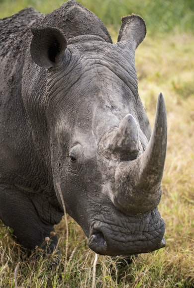
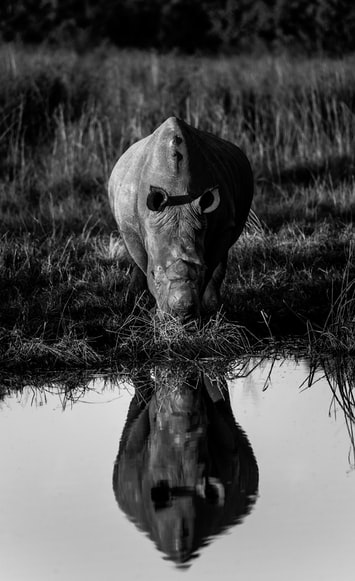

Rinoceronte-Branco
Da família Ceratotherium simiumÉ o maior dos rinocerontes, divergindo do rinoceronte-negro pelo formato dos lábios. Divindido-se em duas subespécies: Rinoceronte-branco-do-sul, mais abundante com 18.000 indivíduos. Rinoceronte-branco-do-norte, muito raro de ser encontrado, tendo o último macho da subespécie morto em 2018.
Sobrou-se apenas duas fêmeas da subespécie do Rinoceronte-branco-do-norte, pesquisadores e cientistas tentam procriar a espécie com material genético deixado pelo último macho.
Animal originário da África do Sul. Sua boca "larga" fruto de uma adaptação de milhares de anos para comer folhas dos arbustos.
Sendo a maior das cinco espécies existentes de rinocerontes. Pesando um pouco mais que o hipopótamo. Seu comprimento varia de 3.7 a 4m nos machos pesando 3.6 Ton em média, já as fêmeas pesam 1.7 Ton e altura variando de 3.4 a 3.65m.
“Quando um Rinoceronte começar a correr, nada, nem ninguém Pode pará-lo.”
- Descobrimento: 1817
- Tipo: Mamífero
- Idade média: 13 anos
- Macho adulto: 3.6Ton
- Fêmea adulta: 1.7Ton
- Família: Rhinocerotidae
É muito caçado devido ao seu corno, bastante difundido na medicina tradicional oriental. Segundo a tradição, teria potencial para curar numerosas doenças, todavia nada foi confirmado por estudos científicos.
O Rinoceronte-branco-do-norte encontravam-se no sul do Chade, no leste da República Centro-Africana, sudoeste do Sudão, nordeste da República Democrática do Congo e noroeste de Uganda. O Rinoceronte-branco-do-sul encontra-se no sudoeste da Angola, sudoeste da Zâmbia, sul de Moçanbique, Zimbábue, Botsuana, leste da Namíbia e norte e leste da África do Sul.